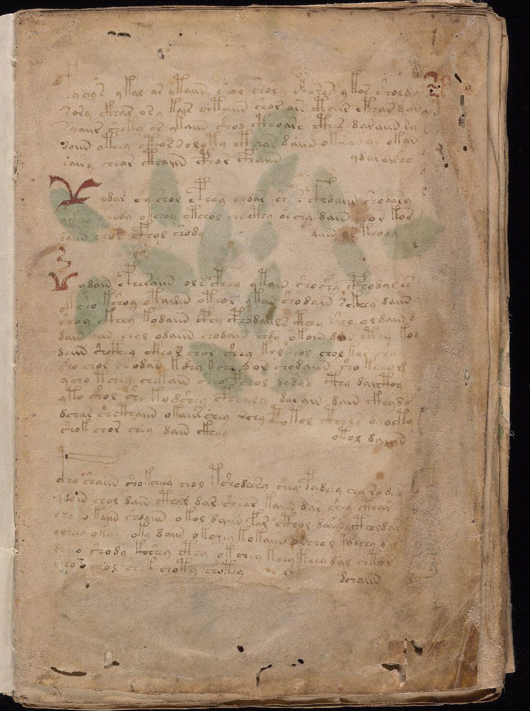
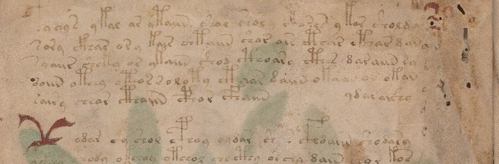
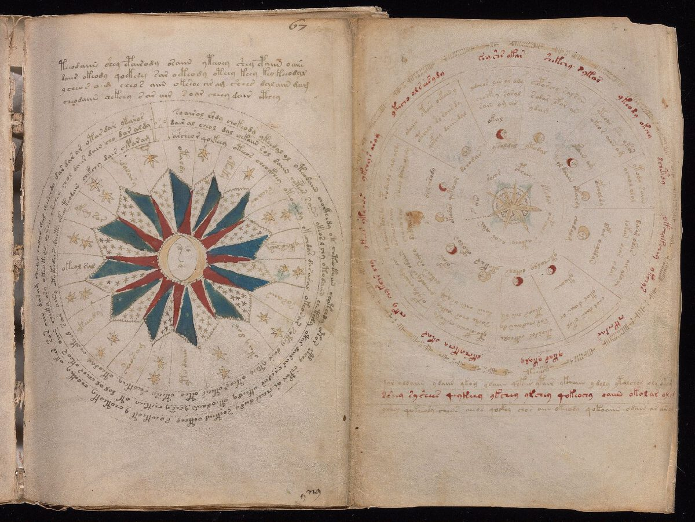
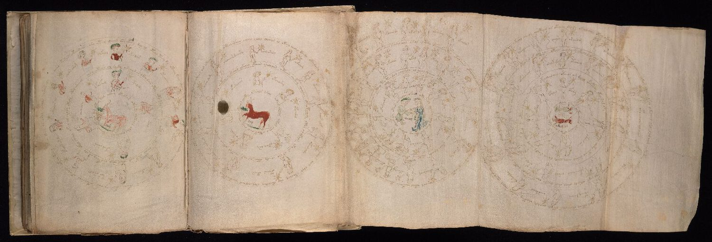
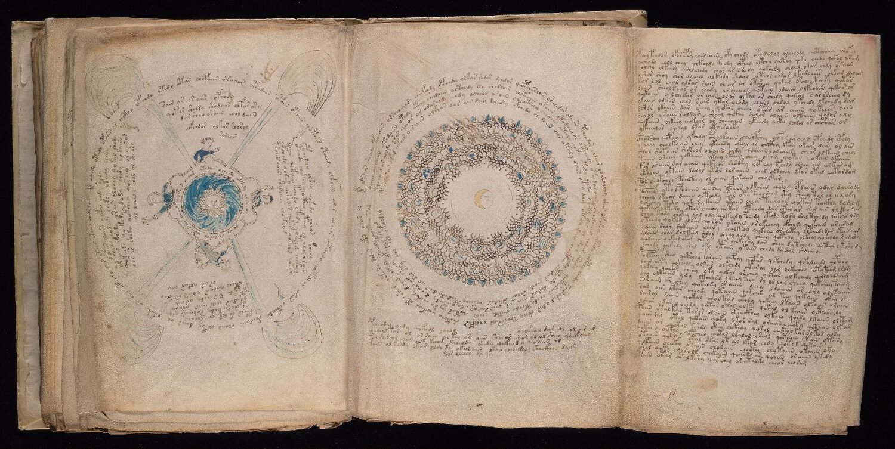

Una scrittura piena di regole.
Dice qualcosa?
Due libri illustrati che nessuno sa leggere. Uno ha sei secoli ed è ancora indecifrato. L’altro è stato inventato da un artista nel 1981. Misuriamo che cosa fanno davvero i loro segni, e teniamo anche i risultati che ci deludono.
Foglio 1r, manoscritto Voynich. Beinecke Rare Book & Manuscript Library, Yale University, MS 408.
Non abbiamo decifrato il manoscritto Voynich.
Non abbiamo dimostrato che sia privo di significato.
La sola struttura
basta a fare una lingua?
Ogni testo scritto da persone ha delle regolarità. Ne hanno anche molte cose che non portano alcun messaggio. La parte difficile è distinguerle.
Il manoscritto Voynich
Circa 240 pagine di pergamena, datate al radiocarbonio tra il 1404 e il 1438, piene di piante che non corrispondono a specie note, carte del cielo e piccole figure nude immerse in vasche verdi. La scrittura è fluida e coerente, come se gli scribi sapessero esattamente che cosa stavano facendo. Resiste da oltre un secolo a crittografi di professione, linguisti e statistici.
Il Codex Seraphinianus
Un’enciclopedia di un mondo immaginario, disegnata e scritta dall’artista italiano Luigi Serafini alla fine degli anni Settanta. La sua scrittura sembra altrettanto sistematica. Serafini ha detto che non nasconde alcun messaggio. Per questo è un controllo raro: una scrittura moderna, fluida e inventata con cui misurare il Voynich.

Cinque tipi di pagina,
un solo tipo di scrittura.
Gli studiosi dividono il manoscritto in base alle illustrazioni. Il testo cambia leggermente da sezione a sezione, e uno dei nostri esperimenti si chiede se questi cambiamenti seguano le figure.
 f34r · erbario
f34r · erbario
Piante che nessuno sa identificare
La sezione più ampia. Ogni pagina accosta una pianta a un blocco di testo, come in un erbario medievale.
 f78r · balneologica
f78r · balneologica
Figure nelle vasche verdi
Figure nude in bacini collegati tra loro. Il testo di queste pagine usa finali di parola nettamente diversi.

f67r · astronomicaCerchi e stelle
Diagrammi con etichette scritte lungo anelli e raggi.

f71v–72r · zodiacoLe pagine dello zodiaco
La parola okeodaly compare nell’anello esterno di entrambe queste pagine del Toro. Stessa grafia, vicini diversi: un’etichetta ripetuta, non una frase ripetuta.

f85r–86v · il pieghevole delle RosetteLa pagina più grande del libro
Un pieghevole di nove medaglioni collegati, qui mostrato in parte. Il testo corre in spirali, anelli e blocchi intorno ai disegni.
Indizi che puntano
in due direzioni.
Ogni risultato qui sotto è un numero misurato in questo progetto, con un controllo con cui confrontarlo. Nessuno, da solo, chiude la questione.
Verso “nessun messaggio”
Risultati compatibili con una scrittura prodotta da semplici regole locali, con poca informazione oltre il segno successivo.
Un contesto più lungo quasi non aiuta
Conoscere tre glifi precedenti invece di due migliora la previsione di circa 0,001 bit nel Voynich. In latino e in italiano il guadagno è di circa 0,33 bit, circa 300 volte di più.
Ogni inizio si combina con ogni finale
Sei inizi di parola (ok, qok, ot, qot, ch, sh) si combinano con tutti e sei i finali comuni (aiin, ain, edy, eedy, ol, ar). Assomiglia a una slot machine quanto a una grammatica.
Le lettere triple sono comuni
39 parole del nostro campione Voynich contengono lo stesso glifo tre volte di fila. Il testo latino di controllo non ne ha nessuna su 7.595 parole. Un semplice cifrario lettera per lettera applicato al latino non potrebbe produrle.
Il decifratore funziona solo sui controlli
Il nostro programma ricostruisce per intero latino e italiano cifrati con un alfabeto segreto. Applicato al Voynich non produce alcun testo leggibile.
Verso “qualcosa è codificato”
Risultati compatibili con un sistema organizzato, in cui le parole dipendono da contesto, posizione e argomento.
Il testo “sa” che cosa mostra la figura
Da sole 30 parole, un classificatore semplice distingue le pagine dell’erbario da quelle delle vasche in 34 pagine su 39, a parità di scriba e di “dialetto”.
Le parole vicine dipendono l’una dall’altra
L’ultimo glifo di una parola condivide 0,21 bit di informazione con il primo glifo della successiva. Mescolando le righe si ottiene 0,016. L’ordine reale delle parole conta.
I paragrafi hanno una forma
Quasi nove parole su dieci che aprono un paragrafo cominciano con un alto glifo a “forca” (gallows). Negli altri inizi di riga la quota è dell’8%. Qualcosa segnala dove comincia un paragrafo.
Alcune coppie di parole sono preferite
La coppia s aiin compare 38 volte, dove il rimescolamento ne prevede 5,5. Espressioni fisse come questa sono tipiche delle lingue, anche se non lo dimostrano.
Come leggiamo il bilancio. Il testo del Voynich è molto organizzato, ma gran parte di questa organizzazione è molto locale: dentro la parola e tra parole vicine. Il Seraphinianus, una scrittura inventata, condivide diverse di queste proprietà. L’organizzazione quindi non prova il significato, e un segnale locale debole non ne prova l’assenza. Entrambe le colonne hanno dei limiti, elencati nella pagina dei risultati.
Quattro porte d’ingresso.
Risultati, con grafici →
Che cosa abbiamo misurato, che cosa significa in parole semplici, e le immagini che lo accompagnano.
Per i linguistiIpotesi e congetture →
Dodici ipotesi esplicite con il loro esito, regole candidate di formazione delle parole, e che cosa ci farebbe cambiare idea.
Per chi ama gli enigmiIl laboratorio Voynich →
Statistiche dei glifi da esplorare, un generatore di “voynichese” e un gioco di decifrazione che mostra perché le false soluzioni sono facili.
Per gli statisticiMetodi e test →
Split, smoothing, modelli nulli a permutazione, intervalli bootstrap, calibrazioni fallite, e il codice per rifare tutto.
Un’ipotesi vale qualcosa
solo se può essere messa alla prova.
Ogni numero di questo sito viene da codice che chiunque può eseguire. Repliche, correzioni e risultati contrari sono benvenuti.
Apri il repository ↗